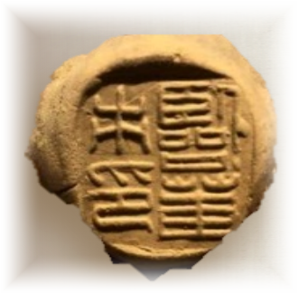
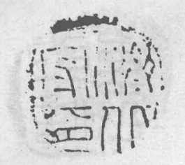

观察文物本体
记录封泥的澄泥质地、印面凹凸、自然残损、系绳压痕与背面指纹，保留原始风貌与封缄工艺细节。


文物调研
走访文博场馆与金石研究机构，对照《齐鲁封泥集存》《封泥考略》等传世典籍与考古发掘报告，让每一枚封泥档案有据可查、科学严谨。
记录封泥的澄泥质地、印面凹凸、自然残损、系绳压痕与背面指纹，保留原始风貌与封缄工艺细节。
调研济南市博物馆、济南考古馆、山东博物馆、章丘博物馆、中国文字博物馆与齐文化博物馆等馆藏。
将小篆、缪篆印文释读与《汉书·百官公卿表》《地理志》交叉比对，考索汉代郡国行政体系。
将调研成果整理为结构化学术字段，为地理图网、开源研学、数字展陈与AI导览提供可靠支撑。
已关注场馆：济南市博物馆 · 济南考古馆 · 青州市博物馆 · 济南章丘博物馆 · 山东博物馆 · 中国文字博物馆 · 齐文化博物馆
认识封泥
封泥不是印章本身，而是古代简牍文书与物资封缄时，在结绳处填覆湿泥并钤压官印形成的防私拆凭信，堪称古代的“信息安全锁”。
拖动手卷、使用滚轮或方向键继续展卷


封泥故事
依据金石考据与考古发掘成果进行学术科普叙事，再现两千年前齐鲁大地的政务与社会百态。
汉代公文通过封检刻槽、结绳填泥后钤盖官印，驿使虽经历千山万水，亦无法在不破坏印蜕泥纹的情况下窥看文书，确保政令精准传达与行政追责。
返回故事目录 ↑清道光年间出土封泥初被误认为“古印模”或“异兽模”。山东学者吴式芬与刘鹗、罗振玉、王国维等学者结合《续汉书·百官志》等文献，最终确证其为“封缄之泥”，揭开金石学新纪元。
返回故事目录 ↑临淄齐故城先后出土大量封泥，包括“临淄守印”“淄川丞相”“临菑市丞”“廣陵鄉印”等50余种，全面还原了齐国郡国官署、治安军事、市场贸易与基层治理的立体图景。
返回故事目录 ↑琅琊出土的“琅琊左盐”封泥，见证了汉武帝时期推行盐铁官营政策在齐鲁沿海的推行；配合“齐北船丞”等印信，勾勒出齐鲁便利的水陆漕运与盐利网络。
返回故事目录 ↑齐鲁封泥文化
展示齐鲁地区代表性职官、机构仓府与地理封泥，呈现印文释读、所属郡国与史料价值。
资料分布
收录山东地区45处现代区县出土与金石著录点位。点击点位可查询代表印文、汉代刺史部体系与古县沿革；现代地理坐标仅作检索索引。
依据《山东省封泥分布谱系与金石文献集成》整理。保留传世拓本释文、异体写法与阙疑考订，为学术研究与公众普及提供线索。



输入现代区县、古地名、官印印文或行政归属进行精确筛选。
显示精选 3 处区县资料
我们的工作
封泥体量精微、文字古雅、公众了解较少。我们通过实地调研、金石建档、数字识读与研学课程设计，将专业的古文字与官制考据转化为鲜活的公众文化产品。
系统记录名称、年代、印文、泥色、出土地、保存状况与金石文献出处。
将小篆与缪篆释读、郡国官制演变与历史地理考订转化为通俗易懂的数字展陈。
以文化地图、研学课程、AI智能导览与文创衍生设计，推动传统文化创造性转化。
开源研学课程
面向中小学及公众普及封泥历史、封缄技艺与古文字鉴赏的公益开源课程资源。
课程视频素材待接入
从古代简牍公文的保密机制出发，深入解析封泥的制作、系绳、填泥与破封全过程。
封泥牌具设计
在线查看可替换贴图的扑克牌与麻将 3D 样机。后续 Photoshop 设计导出后，只需覆盖配置中的 PNG 或 WebP 文件。
AI吉祥物
结合封泥古文字数据库与多模态图像识别能力，提供印文候选释读、官制背景解析、历史典故与文物导览，让冷门绝学触手可及。
AI回答与图片分析仅作辅助研学参考，学术定论请参考专业文博报告。
趣味问答
每轮随机抽取十题，每题 10 分。看看你学会了多少吧！